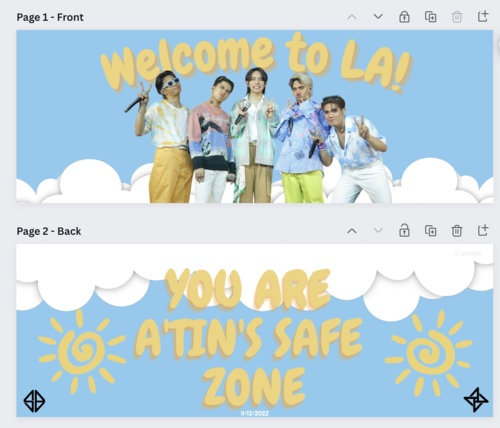
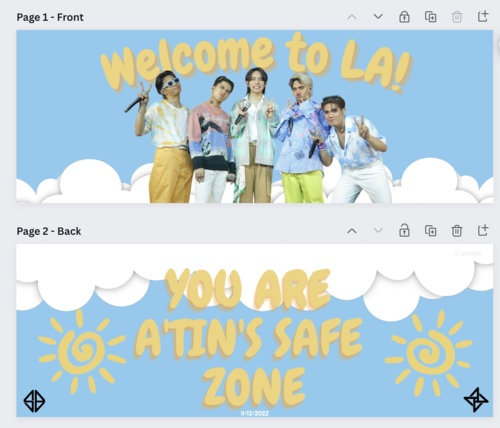
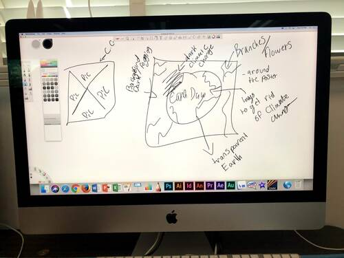
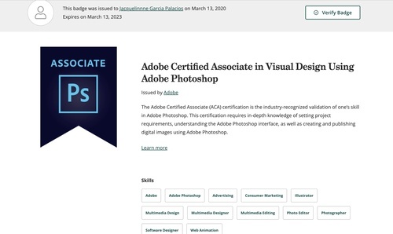
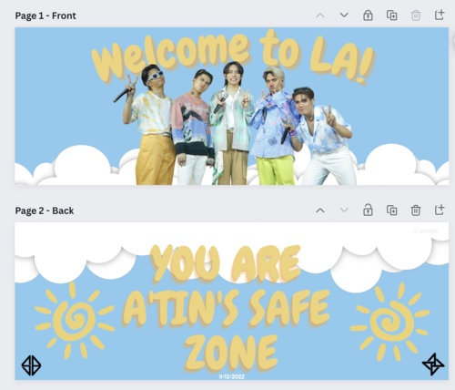
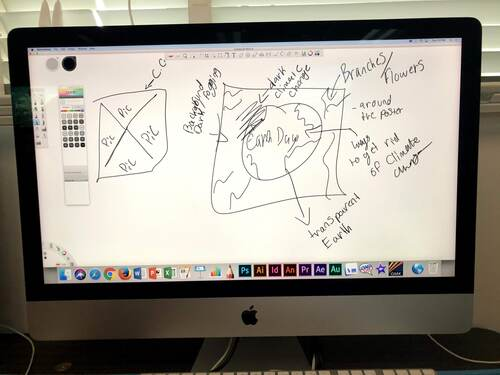
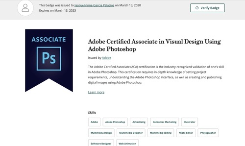

Jacquelinne Garcia
Currently studying filmmaking at the University of California Riverside, have obtained an understanding of film aspects such as lighting, camera angles, costumes, props, and depth of details regarding sound and editing. Obtained an understatement of acting and analyzed the depth of grasping the emotion of the character, expressing it through vocal and body movements. I have also had experience using photo editing apps such as Adobe Photoshop and was certified. Learned basic skills such as typography, layout, layers, additionally, print design; such as posters, brochures, etc. One of my recent personal projects was designing a banner that welcomed an artist, using Canva to design and layer the text and remove backgrounds from photos and icons allowing me to place them anywhere on the background base of the design. Aligned the layers and icons smoothly to blend in as one, later uploaded the final design to a printing company and requested feedback before an order of the banner could be produced. I additionally take time within my day to expand my knowledge with different types of video editing softwares and templates by recording my personal life events and composing them into one long video blog. I have familiarized myself with video editing applications on iOS such as iMovie, Adobe After Effects and VN. I have learned to add special effects to videos and break apart into structure such as intro, video idea, and closing to the video. Adapting and learning the processes of adding animated text, subtitles (English to Spanish), and making sure that they are timed perfectly to where they are being said.
Studied Adobe Photoshop and 2D Animation for two years, learnt the usage of Adobe Animate, practiced artistic skills of drawing, shadows, and analyzed the change movement creating the illusion of movement. Grasped an understanding of the color theory, drawing and composition, and design principles. Worked in group projects such as producing a cartoon character climbing up hills and transitioning to a different setting, had to create a storyboard, direct and assign an artist, go over if the animation needed sound and if so what type of sound. After gaining a good amount of experience from assignments, early of 2020 I was able to obtain Adobe Photoshop Certified Associate.
Aside from film and editing, I have worked behind the scenes in a theater production, “He Said and She said,” written by Alice Gerstenberg where I was to look for sounds that connect to the feeling of the scene, introduction and ending music that kept the audience's attention. In this task, I had to research the theme and the context around the character’s dialogue to use the right music. Convert audios found within Youtube and convert them into MP3 files, crop the files to the time that best fits the scene while correlating to the time period of the play. Taking the files and importing, arranging them in correlation of the scenes, applying transitions in between them in order to have a mashup that obtains every piece needed in it.
Experience
Sound designer
• Helped set the mood of the play
• Converted video audios into MP3 files
• Set and described location
SGMA Office Assistant
•Provided information to visiting parents
•Adopted office equipment skills
Student Store Cashier
• Prioritized and organized tasks to efficiently accomplish service goals
• Tracked inventory and conducted cycle counts to maintain accurate records
• Collected payments and provided accurate change
• Stocked shelves with new merchandise and checked for outdated or damaged items
Education
University of California Riverside
Portfolio
 



 